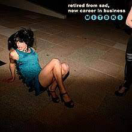
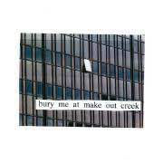

Este álbum es liderado por notas y voz suave que nos lleva a un ambiente muy melancólico. El instrumento más usado es el piano.
Pero el álbum no solo se resume a eso, pues en algunas canciones se nos muestra cambios muy orgánicos de notas suaves a unas más elevadas.
Retired From Sad, New Career In Business
En este álbum se nos muestra el cambio que tuvo ella, pero sin dejar lo que la caracterizaba tanto que eran letras melancólicas.
Podemos observar que en este álbum ella se va más por un lado teatral, teniendo letras que describen mucho un escenario y que perfectamente podrían estar en una obra teatral.

Bury Me At Make Out Creek
En este álbum es donde tendría una de sus facetas más conocidas. Ahora el piano no es el instrumento principal, si no la guitarra, acompañada por sintetizadores, una batería y un estilo muy de garaje.

Puberty 2
Este álbum es como recolectar todos los ritmos de los anteriores trabajos y agregarle un estilo más rockero y punkero.
Be The Cowboy
Es el álbum más conocido de toda la carrera musical de Mitski.
Sigue con el mismo patrón de sonidos, pero teniendo un toque más comercial y melodías fáciles de recordar.
Laurel hell
Este álbum es un poco diferente a los anteriores, porque se encuentran más sonidos de los 80´s. Mitski se retira un poco de ser esa chica triste que escribe letras melancólicas. Con este nuevo álbum se quiso alejar de eso y entrar en un ambiente más cálido y feliz.